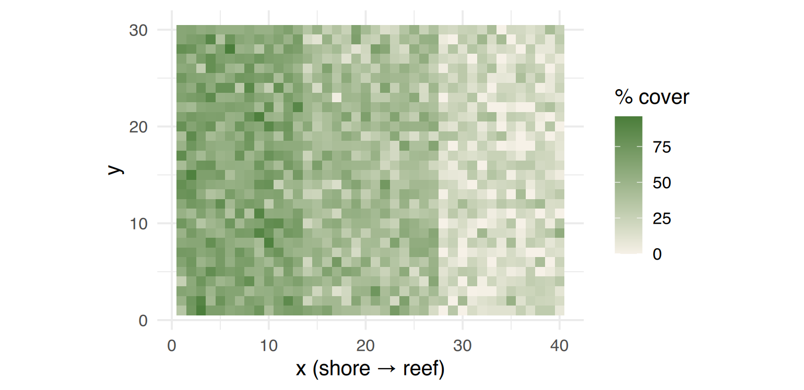
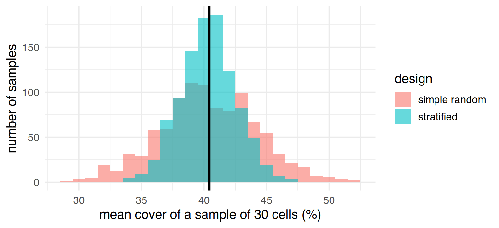

sample() and
set.seed(), and compare their estimates with the true
population value;sample() et
set.seed(), et comparer leurs estimations à la vraie valeur
de la population ;Why it matters: in the reef survey, no-take reserves have more fish. But reserves may have been placed on reefs that were already in better condition (more coral, further from villages). Coral cover is then a confounding variable: it is related both to the “treatment” (protection) and to the response (fish). An observational study shows an association; to speak of a cause, you need an experiment — or a careful design (before/after and control/impact, called BACI) and arguments.
In an experiment, random assignment spreads the unknown differences between units evenly over the treatments: if pens differ in sediment, the random draw makes it unlikely that all the good pens get the same feed.
Pourquoi c’est important : dans le suivi des récifs, les réserves intégrales ont plus de poissons. Mais les réserves ont peut-être été placées sur des récifs déjà en meilleur état (plus de corail, plus loin des villages). Le recouvrement corallien est alors une variable de confusion : il est lié à la fois au « traitement » (la protection) et à la réponse (les poissons). Une étude observationnelle montre une association ; pour parler de cause, il faut une expérience — ou un plan soigneux (avant/après et témoin/impact, appelé BACI) et des arguments.
Dans une expérience, l’attribution aléatoire répartit les différences inconnues entre unités de façon équilibrée entre les traitements : si les enclos diffèrent par leur sédiment, le tirage au hasard rend peu probable que tous les bons enclos reçoivent le même aliment.
# Random assignment of 4 feeds to 24 pens (6 pens each)
set.seed(90)
treatments <- rep(c("control", "seaweed", "manure", "mixed"), each = 6)
plan <- data.frame(pen = sprintf("P%02d", 1:24), treatment = sample(treatments))
head(plan, 8)#> pen treatment
#> 1 P01 mixed
#> 2 P02 control
#> 3 P03 manure
#> 4 P04 manure
#> 5 P05 seaweed
#> 6 P06 control
#> 7 P07 manure
#> 8 P08 mixed#>
#> control manure mixed seaweed
#> 6 6 6 6Functions and arguments used here
| Function / argument | What it does | Value it expects |
|---|---|---|
set.seed(n) |
fixes the starting point of R’s random numbers: the same seed gives the same “random” draw, so your work can be repeated exactly | any whole number |
sample(x) |
with one vector: shuffles it (random order) | a vector |
sprintf("P%02d", 1:24) |
builds labels: %02d = a whole number on 2 digits (P01,
P02…) |
Fonctions et arguments utilisés ici
| Fonction / argument | Ce qu’il fait | Valeur attendue |
|---|---|---|
set.seed(n) |
fixe le point de départ des nombres aléatoires de R : la même graine donne le même tirage « aléatoire », votre travail peut donc être refait à l’identique | un nombre entier quelconque |
sample(x) |
avec un seul vecteur : le mélange (ordre aléatoire) | un vecteur |
sprintf("P%02d", 1:24) |
construit des étiquettes : %02d = un entier sur 2
chiffres (P01, P02…) |
The sampling unit (in an experiment, the experimental unit) is the smallest unit that is independently selected or treated. It is what n counts.
Pseudoreplication is treating non-independent measurements as independent replicates. Classic example: comparing one reserve with one fished reef using 30 quadrats in each. The test would compare two places, not “protection”: any difference between the two places (depth, currents, distance to the village) is confused with the effect of protection. With one place per treatment, the true n is 1 per group.
L’unité d’échantillonnage (dans une expérience, l’unité expérimentale) est la plus petite unité sélectionnée ou traitée indépendamment. C’est elle que n compte.
La pseudo-réplication consiste à traiter des mesures non indépendantes comme des réplicats indépendants. Exemple classique : comparer une réserve à un récif pêché avec 30 quadrats dans chacun. Le test comparerait deux lieux, pas « la protection » : toute différence entre les deux lieux (profondeur, courants, distance au village) est confondue avec l’effet de la protection. Avec un seul lieu par traitement, le vrai n est de 1 par groupe.
Rule: ask “at which level was the treatment applied, or the unit chosen at random?” — that level is your replicate. Measurements below it (animals in a pen, quadrats on a transect) improve the precision of each replicate’s value, but do not increase n. (Mixed models, which use all levels at once, are in the Statistical modelling course.)
Règle : demandez-vous « à quel niveau le traitement a-t-il été appliqué, ou l’unité choisie au hasard ? » — ce niveau est votre réplicat. Les mesures en dessous (animaux d’un enclos, quadrats d’un transect) améliorent la précision de la valeur de chaque réplicat, mais n’augmentent pas n. (Les modèles mixtes, qui utilisent tous les niveaux à la fois, sont dans le cours Modélisation statistique.)
Lagoon census (lagoon_population.csv,
simulated). A seagrass lagoon was divided into 1,200 cells of 10
× 10 m (40 columns x from the shore to the reef,
30 rows y). Drone images checked on the ground gave, for
every cell, the zone (inshore,
middle, reef_flat), the depth, the % seagrass
cover and the number of sea urchins. Because we know the whole
population, we know the true parameters — something
that never happens in real life — and we can watch how samples
behave.
Recensement du lagon
(lagoon_population.csv, simulé). Un lagon à herbiers a été
divisé en 1 200 cellules de 10 × 10 m (40 colonnes
x de la côte vers le récif, 30 lignes y). Des
images de drone vérifiées sur le terrain ont donné, pour
chaque cellule, la zone (inshore,
middle, reef_flat), la profondeur, le % de
recouvrement d’herbier et le nombre d’oursins. Comme nous connaissons
toute la population, nous connaissons les vrais
paramètres — ce qui n’arrive jamais dans la réalité — et nous pouvons
observer le comportement des échantillons.
lag <- read.csv("data/lagoon_population.csv")
mu <- mean(lag$seagrass_cover) # the TRUE mean (parameter)
mu#> [1] 40.4225#> inshore middle reef_flat
#> 61.53590 41.81667 17.80769ggplot(lag, aes(x, y, fill = seagrass_cover)) +
geom_tile() +
scale_fill_gradient(low = "#f6f1e7", high = "#4a7d3a", name = "% cover") +
coord_equal() + labs(x = "x (shore → reef)", y = "y") + theme_c()
Functions and arguments used here
| Function / argument | What it does | Value it expects |
|---|---|---|
geom_tile() |
draws one coloured rectangle per row, at position x,
y |
|
scale_fill_gradient(low, high, name) |
colour scale between two colours for a numeric
fill |
colour names or codes |
coord_equal() |
one unit on x = one unit on y (cells stay square) |
Fonctions et arguments utilisés ici
| Fonction / argument | Ce qu’il fait | Valeur attendue |
|---|---|---|
geom_tile() |
dessine un rectangle coloré par ligne, à la position x,
y |
|
scale_fill_gradient(low, high, name) |
échelle de couleurs entre deux couleurs pour un fill
numérique |
noms ou codes de couleurs |
coord_equal() |
une unité sur x = une unité sur y (les cellules restent carrées) |
Cover decreases strongly from the shore (≈ 60 %) to the reef flat (≈ 20 %). Keep this in mind: how you sample this gradient will decide whether your estimate is right.
Le recouvrement diminue fortement de la côte (≈ 60 %) vers le platier (≈ 20 %). Gardez cela en tête : la façon d’échantillonner ce gradient décidera si votre estimation est juste.
Every cell has the same chance of being chosen, independently of the others. It is the reference design: the sample mean is unbiased (on average, over many samples, it equals μ).
Chaque cellule a la même chance d’être choisie, indépendamment des autres. C’est le plan de référence : la moyenne d’échantillon est sans biais (en moyenne, sur de nombreux échantillons, elle vaut μ).
set.seed(1)
rows_srs <- sample(1:nrow(lag), size = 30) # 30 row numbers, without replacement
srs <- lag[rows_srs, ]
mean(srs$seagrass_cover)#> [1] 37.5Functions and arguments used here
| Function / argument | What it does | Value it expects |
|---|---|---|
sample(x, size, replace) |
draws size values at random from x |
|
size |
how many values to draw | a whole number |
replace |
FALSE (default): each value at most once (sampling
cells); TRUE: values can come back (bootstrap, Session
5) |
TRUE / FALSE |
lag[rows, ] |
keeps the rows whose numbers are in rows, all columns
(Beginner Session 4) |
Fonctions et arguments utilisés ici
| Fonction / argument | Ce qu’il fait | Valeur attendue |
|---|---|---|
sample(x, size, replace) |
tire size valeurs au hasard dans x |
|
size |
combien de valeurs tirer | un nombre entier |
replace |
FALSE (défaut) : chaque valeur au plus une fois (tirer
des cellules) ; TRUE : les valeurs peuvent revenir
(bootstrap, séance 5) |
TRUE / FALSE |
lag[rows, ] |
garde les lignes dont les numéros sont dans rows,
toutes les colonnes (séance 4 du niveau débutant) |
The population is divided into strata that are expected to differ (here the three zones), and a random sample is drawn in each stratum. Advantages: every zone is represented, results can be given per zone, and the estimate is usually more precise than a simple random sample of the same size, because the large differences between zones no longer add noise. The fisher survey is stratified by village (60 per village).
La population est divisée en strates qui devraient différer (ici les trois zones), et un échantillon aléatoire est tiré dans chaque strate. Avantages : chaque zone est représentée, les résultats peuvent être donnés par zone, et l’estimation est en général plus précise qu’un échantillon aléatoire simple de même taille, car les grandes différences entre zones n’ajoutent plus de bruit. L’enquête pêcheurs est stratifiée par village (60 par village).
set.seed(1)
rows_str <- c(sample(which(lag$zone == "inshore"), 10),
sample(which(lag$zone == "middle"), 10),
sample(which(lag$zone == "reef_flat"), 10))
str_s <- lag[rows_str, ]
tapply(str_s$seagrass_cover, str_s$zone, mean)#> inshore middle reef_flat
#> 65.2 42.2 14.8#> [1] 40.73333Functions and arguments used here
| Function / argument | What it does | Value it expects |
|---|---|---|
which(test) |
the positions (row numbers) where the test is TRUE |
a logical vector |
Fonctions et arguments utilisés ici
| Fonction / argument | Ce qu’il fait | Valeur attendue |
|---|---|---|
which(test) |
les positions (numéros de lignes) où le test est
TRUE |
un vecteur logique |
Here the three zones have almost the same number of cells (≈ 400 each), so the plain mean of the 30 values is fine. If the strata had very different sizes, each stratum mean should be weighted by the share of the population it represents.
Ici les trois zones ont presque le même nombre de cellules (≈ 400 chacune), la moyenne simple des 30 valeurs convient donc. Si les strates avaient des tailles très différentes, la moyenne de chaque strate devrait être pondérée par la part de la population qu’elle représente.
Units are taken at regular intervals from a random start: a quadrat every 5 m along a tape, every 40th cell. Easy in the field and well spread, but risky if the environment has a pattern with the same period as the interval (e.g. sand ridges every 40 m).
Les unités sont prises à intervalles réguliers à partir d’un départ aléatoire : un quadrat tous les 5 m le long d’un ruban, une cellule sur 40. Facile sur le terrain et bien réparti, mais risqué si le milieu présente un motif de même période que l’intervalle (ex. des rides de sable tous les 40 m).
set.seed(1)
start <- sample(1:40, 1)
rows_sys <- seq(from = start, to = nrow(lag), by = 40) # 1 cell in 40 -> 30 cells
length(rows_sys)#> [1] 30#> [1] 62.8“We sampled the 30 cells closest to the landing site because the boat was broken.” The sample is easy, but biased: here all cells are inshore, where cover is highest.
« Nous avons échantillonné les 30 cellules les plus proches du débarcadère parce que la pirogue était en panne. » L’échantillon est facile, mais biaisé : ici toutes les cellules sont côtières, là où le recouvrement est le plus élevé.
#> [1] 30#> [1] 64.4More data does not fix bias. 300 convenience cells would give an even more confident wrong answer. Random selection is what makes the statistics of the next sessions valid.
Plus de données ne corrige pas un biais. 300 cellules de commodité donneraient une réponse fausse encore plus sûre d’elle. C’est le tirage aléatoire qui rend valides les statistiques des séances suivantes.
One sample gives one estimate. What if we had sampled again? Because
we know the population, we can draw 1,000 simple random
samples and 1,000 stratified samples, and look at the spread of
their means. replicate() repeats an expression many
times.
Un échantillon donne une estimation. Et si nous avions échantillonné
à nouveau ? Comme nous connaissons la population, nous pouvons tirer
1 000 échantillons aléatoires simples et 1 000
échantillons stratifiés, et regarder la dispersion de leurs moyennes.
replicate() répète une expression de nombreuses fois.
set.seed(42)
m_srs <- replicate(1000, mean(lag$seagrass_cover[sample(1:nrow(lag), 30)]))
m_str <- replicate(1000, {
r <- c(sample(which(lag$zone == "inshore"), 10), sample(which(lag$zone == "middle"), 10),
sample(which(lag$zone == "reef_flat"), 10))
mean(lag$seagrass_cover[r])
})
c(mean_srs = mean(m_srs), mean_str = mean(m_str), true = mu) # both unbiased#> mean_srs mean_str true
#> 40.35913 40.34930 40.42250#> sd_srs sd_str
#> 3.888493 2.209254sims <- data.frame(design = rep(c("simple random", "stratified"), each = 1000), mean = c(m_srs, m_str))
ggplot(sims, aes(mean, fill = design)) +
geom_histogram(binwidth = 1, alpha = 0.6, position = "identity") +
geom_vline(xintercept = mu, linewidth = 1) +
labs(x = "mean cover of a sample of 30 cells (%)", y = "number of samples") + theme_c()
Functions and arguments used here
| Function / argument | What it does | Value it expects |
|---|---|---|
replicate(n, expr) |
evaluates expr n times and collects the
results in a vector |
|
{ ... } |
several lines treated as one expression; the value of the last line is returned | |
alpha, position = "identity" (in
geom_histogram()) |
transparency (0–1); bars of the two groups drawn on top of each other instead of stacked | |
geom_vline(xintercept) |
vertical line at a given x value | a number |
Fonctions et arguments utilisés ici
| Fonction / argument | Ce qu’il fait | Valeur attendue |
|---|---|---|
replicate(n, expr) |
évalue expr n fois et rassemble les
résultats dans un vecteur |
|
{ ... } |
plusieurs lignes traitées comme une seule expression ; la valeur de la dernière ligne est renvoyée | |
alpha, position = "identity" (in
geom_histogram()) |
transparence (0–1) ; barres des deux groupes superposées au lieu d’empilées | |
geom_vline(xintercept) |
ligne verticale à une valeur de x donnée | un nombre |
Both histograms are centred on the true mean (no bias), but the stratified one is narrower: with the same effort (30 cells), stratification gives estimates closer to the truth. The spread of these sample means has a name — the standard error — and it is the subject of Session 5.
Les deux histogrammes sont centrés sur la vraie moyenne (pas de biais), mais celui du stratifié est plus étroit : avec le même effort (30 cellules), la stratification donne des estimations plus proches de la vérité. La dispersion de ces moyennes d’échantillons a un nom — l’erreur standard — et c’est le sujet de la séance 5.
With lagoon_population.csv (the whole population):
sd(),
2 decimals).set.seed(2026); s <- lag[sample(1:nrow(lag), 40), ] and
give the mean number of urchins in this sample (3 decimals).Avec lagoon_population.csv (toute la population) :
sd(), 2
décimales).reef_flat, 2 décimales).set.seed(2026); s <- lag[sample(1:nrow(lag), 40), ] et
donnez le nombre moyen d’oursins dans cet échantillon (3
décimales).Q4: mean(lag$seagrass_cover > 50) is a proportion;
multiply by 100. Q6: the seed must be run in the same line or
just before sample(), otherwise the draw
differs.
Q4 : mean(lag$seagrass_cover > 50) est une proportion
; multipliez par 100. Q6 : la graine doit être exécutée sur la
même ligne ou juste avant sample(), sinon le
tirage diffère.
lag <- read.csv("data/lagoon_population.csv")
round(mean(lag$seagrass_cover), 2) # 1
round(sd(lag$seagrass_cover), 2) # 2
round(mean(lag$urchins), 3) # 3
round(100 * mean(lag$seagrass_cover > 50), 1) # 4
round(tapply(lag$seagrass_cover, lag$zone, mean), 2) # 5
set.seed(2026); s <- lag[sample(1:nrow(lag), 40), ]
round(mean(s$urchins), 3) # 6
# 7: observational (reserves were not assigned at random) -> association, possible confounding
# 8: the pen: the feed is applied to the pen 9: biased upwards 10: zones differ strongly